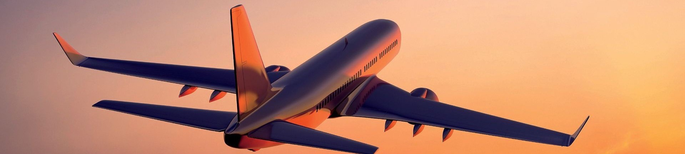
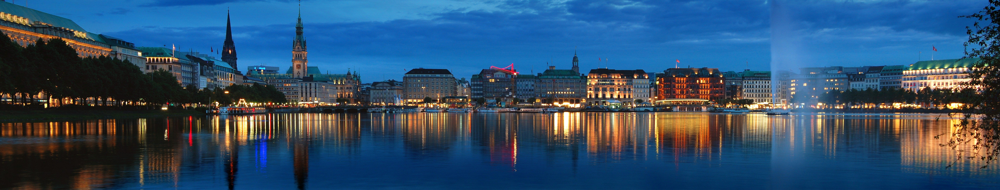
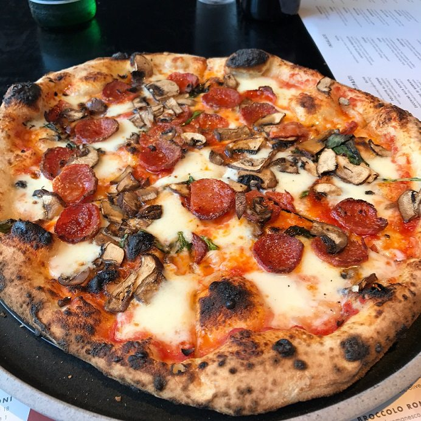
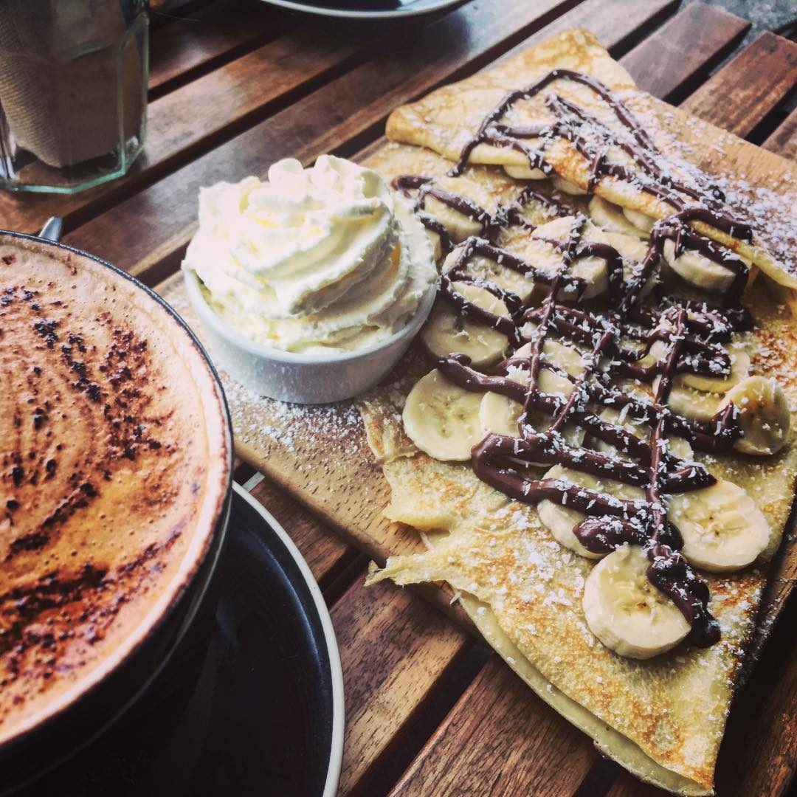
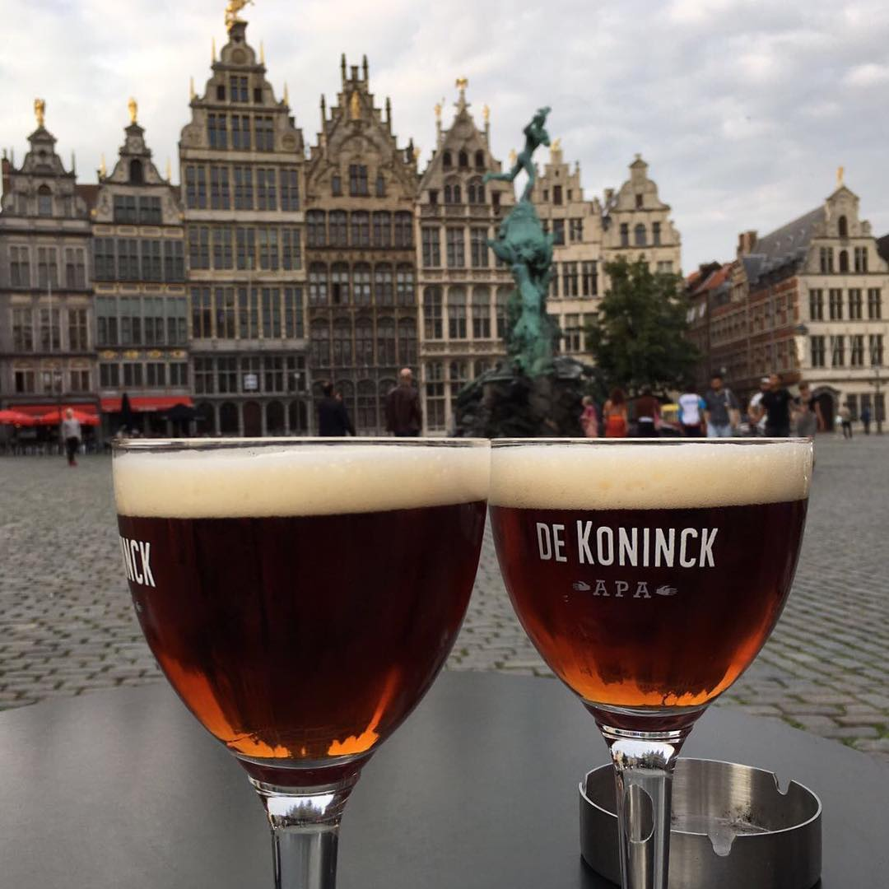
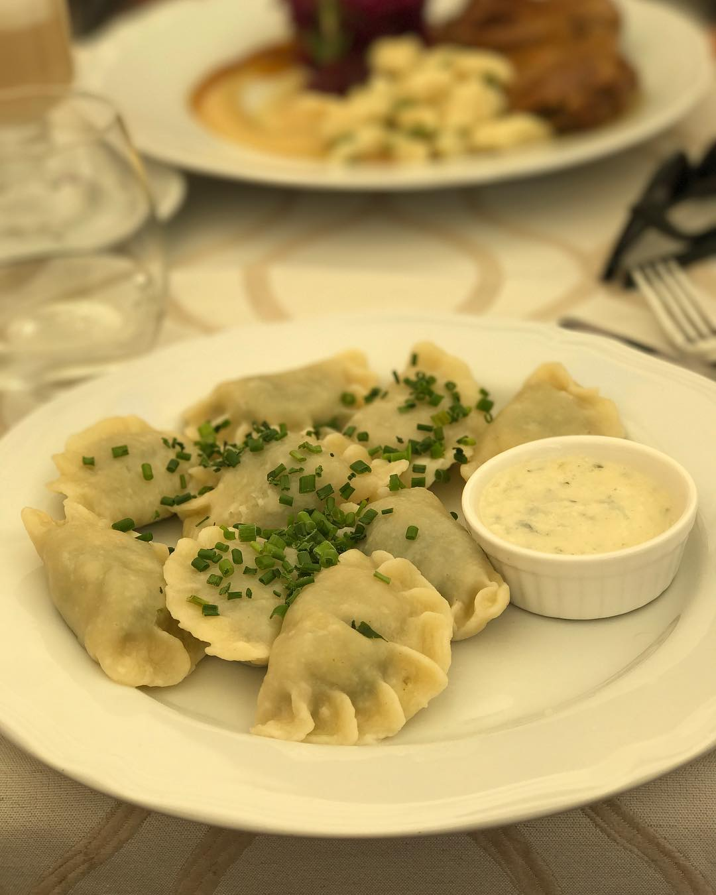
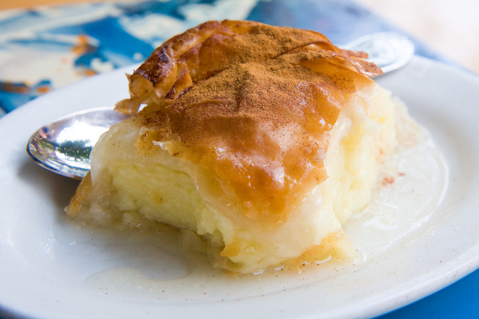

What would you like to read about?
Best Ways to Get There
There are now tons of cheap ways to get around Europe because of all these changes. By far one of the cheapest ways to travel long-distance in Europe is by budget airline. These airlines are hugely prolific on the continent, and this competition has led to incredibly cheap fares, often as cheap as 1 euro. When I need to go somewhere and I don’t want to take a long bus or train journey, I fly budget airlines. My favorite budget airlines are:
- Ryanair
- Wow Air
- Norwegian Air
- Wizz Air
Also, if you are planning a longer journey, you can get an Interrail Flex Pass. You can write the ID and hour of your train on ticket as soon as you are in it. This way you will never miss a train or waste a day of your pass.
Accommodation
Where you sleep at night is one of your major fixed travel expenses, so learning how to find cheap accommodation will help you to keep more money in your pocket for spending on activities.
There is no point finding cheap hotel accommodation if it is miles out of town and you have to pay extra in transportation costs.Stay in a central rea close to public transport, airports, local attractions, food outlets, the beach, the park, and the ability to get out and walk to most things.
Are hotels cheaper in different seasons? Of course!
One of the obvious tips on how to find cheap accommodation is
by travelling in the shoulder season, that time
period between the peak and off-peak season.
One of my recomandations is to try Airbnb.
These properties allow travelers to trade in the
cookie-cutter hotel experience for one that offers
colleagues a unique and comfortable space in which
to connect and collaborate.
Finding Great Views
If you want to «travel far away» while staying in Europe, the best idea is to discover the most beautiful landscapes in Europe. Discover the most beautiful European landscapes with the Cote d'Azur but also the wonderful Navagio in Zakynthos, Greece. You probably already know about the Burano and Murano islands in Venice, Italy,but what about The Blue Lagoon, from Split, Croatia?
Come and discover the carpets of blue bell of wild hyacinths covering the wood of Hallerbos in Hal (Flemish Brabant), close to Brussels. This beautiful forest is famous for the beautiful wild hyacinths that bloom at the end of April or the beginning of May.
Mount Etna is certainly the most famous volcano in Europe It is located in Catania (Sicily). It is the largest volcano in Europe culminating at 3300 meters. Etna is not as quiet as you think with more than 100 eruptions in 100 years; it is one of the most active volcanoes in the world.
The Plitvice lakes National Park are ranked at the top of the most beautiful parks in Europe. Treat yourself to a day trip to the Plitvice Lakes National Park, a city trip to Zagreb or a relaxing holiday in Zadar. These 16 large lakes, connected by nearly 100 waterfalls, are dazzlingly blue.
Traditional Food and Drinks
Pizza
There are few countries as well-known for great cuisine as Italy. And while there’s more to Italian food than just pizza and pasta, you’ve still got to try the original. It seems most cities in Italy are competing for the best pizza, but really, you’ve got to try it in Naples if you can. Oh, and while you’re in Italy — might as well get your fill of gelato, too!
Crepes
Besides baguettes, there’s nothing more French than a crepe—savoury or sweet. The best crepes are the simplest ones and can be found throughout France — we like the ones with Nutella on the inside!
Beer
Okay, so beer isn’t a food. But if you’ve been to Belgium, you’ll know that beer is practically a meal here. In a country with over 150 different breweries, Belgium is spoiled for choice in types of beer. Belgium tourism has a handy guide to the many different beer breweries, festivals and tours on their website.
Pierogi
It seems every culture in the world has some sort of dumplings dish and in Poland, it’s called a pierogi. They come in hundreds of varieties, but most traditionally they’re baked or fired in butter with onions — and almost always served with sauerkraut! They can be vegetarian (in Poland, that means potatoes) or with ground meat. Entire restaurants are dedicated to pierogi!
Galaktoboureko
Galaktoboureko is a great Greek dessert with crispy perfection. Take a mouthful bite of Galaktoboureko and let your mouth be filled with its juices. This age old Greek dessert is made of crispy phyllo sprinkled with melted butter. Greeks use the most creamy custard & scented syrup to increase the taste of this food by many folds.